품질경영기사 (2019-09-21 기출문제)
1과목: 실험계획법
1. 요인 A, B가 각각 4수준인 모수모형 반복 없는 2요인 시험에서 결측지가 1개 발생하였다. 이것을 추정하여 분석했을 때, 오차항의 자유도(νe)는?
- 4
- 8
- 9
- 11
(정답률: 76%)

2. 다음은 L9(34)형 직교배열표를 이용하여 A, B, C 각각 3수준을 배열하여 실험한 결과를 나타낸 것이다. 요인 A의 제곱한 SA는 약 얼마인가?
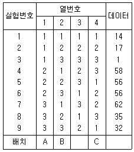
- 38.22
- 314.89
- 340.22
- 3348.22
(정답률: 59%)
3. 23형 요인실험을 abc, a, b, c 4개의 조합에 의한 일부실시법으로 실험하려고 한다. A의 주효과를 구하는 식으로 맞는 것은? (단, 1/2 블록 반복의 실험이다.)
- 1/2[abc-a+b-c]
- 1/2[abc+a-b+c]
- 1/2[abc-a-b+c]
- 1/2[abc+a-b-c]
(정답률: 75%)
4. 교락법에서 블록반복을 행하는 경우에 각 반복마다 블록효과와 교락시키는 요인이 다른 경우를 무엇이라 하는가?
- 완전교락
- 단독교락
- 이중교락
- 부분교락
(정답률: 71%)
5. 다요인 실험계획법(다원배치법)에 대한 설명으로 틀린 것은?
- 실험의 랜덤화가 용이하다.
- 실험횟수가 급격히 증가한다.
- 실험을 하는데 비용이 많이 든다.
- 불필요한 요인이라고 판단되면 요인의 수를 줄여가는 노력이 필요하다.
(정답률: 71%)
6. 23형 요인배치법에서 다음 표와 같이 8회의 실험을 하였을 때, 교호작용 A×C의 효과는 얼마인가?
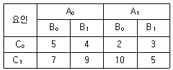
- 0.55
- 0.65
- 0.75
- 0.85
(정답률: 74%)
7. 두 개 이상의 요인효과가 뒤섞여서 분리되지 않은 것을 무엇이라 하는가?
- 오차
- 잔차
- 교락
- 교호작용
(정답률: 63%)
8. 다음은 반복이 다른 1요인 실험 결과에 대한 분산분석표이다. F0의 () 안에 알맞은 값은 약 얼마인가?
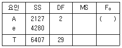
- 4.46
- 4.63
- 6.71
- 6.95
(정답률: 82%)
9. 실험의 결과 특성치가 다음과 같다. 이를 망목 특성치로 생각하면 SN비(signal to noiseratio)는 약 얼마인가?
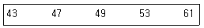
- 8.685
- 17.37
- 20.01
- 40.02
(정답률: 65%)
10. 동일한 물건을 생산하는 5대의 기계에서 부적합여부의 동일성에 관한 실험을 하였다. 적합품이면 0, 부적합품이면 1의 값을 주기로 하고, 5대의 기계에서 200개씩 제품을 만들어 부적합여부를 실험하여 다음과 같은 분산분석표를 구하였다. 다음 분산분석표의 일부자료를 이용하여 검정통계량 F0의 값을 구하면 얼마인가?
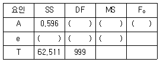
- 1.782
- 2.395
- 3.212
- 3.410
(정답률: 76%)
11. 수준수 l=5, 반복수 m=3인 1요인 실험 단순휘귀 분석에서 직선회구의 자유도(vr)와 고차회귀의 자유도(νr)는 각각 얼마인가?
- νR=1, νr=3
- νR=1, νr=4
- νR=2, νr=3
- νR=2, νr=4
(정답률: 47%)
12. 모수요인 a를 3수준, 변량요인 B를 4수준으로 하여 반복 2회의 실험을 했을 때, 요인 A의 불편분산 기대치(E(VA))는?
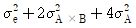
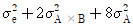
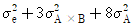
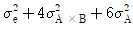
(정답률: 69%)
13. 1차 단위 요인이 A(4수준), 2차 단위 요인이 B(3수준), 반복요인이 R(3회)인 단일 분할법 실험에서 2차 단위 오차(e2)의 자유도 νe2는?
- 16
- 18
- 20
- 22
(정답률: 54%)
14. 제품의 강도를 높이기 위하여 열처리 온도를 요인으로 설정하여 300℃, 350℃, 400℃에서 실험을 실시했을 경우의 설명으로 틀린 것은?
- 수준수는 3이다.
- 강도는 특성치이다.
- 열처리 온도는 변량요인이다.
- 수준은 기술적으로 미리 정해진 수준이다.
(정답률: 78%)
15. 난괴법이 층별이 잘된 경우에는 반복이 있는 1요인 실험보다 더 좋은 이점은 무엇인가?
- 정보량이 많아지고, 오차분산이 작아진다.
- 실험을 많이 함으로 원하는 모든 정보를 얻을 수 있다.
- 처리수별에 따른 반복수 동이하지 않아도 됨으로 결측치가 생겨도 쉽게 해석할 수 있다.
- 하나는 모수요인이고, 다른 하나는 변량요인이므로 변량요인을 이용함으로 더 쉽게 해설할 수 잇다.
(정답률: 48%)
16. 다음은 실험조건(A, B, C)에서 실험순서(1, 2, 3)가 날짜(월, 화, 수)를 고려한 라틴방격법이다. ㉠~㉣ 중 라틴방격법에 의한 실험계획을 모두 고른 것은?
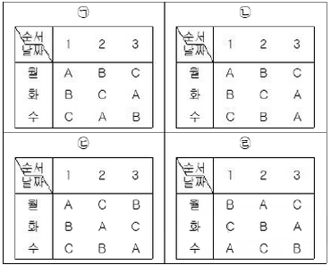
- ㉠
- ㉡,㉢,㉣
- ㉠,㉡,㉢,㉣
- ㉠,㉢,㉣
(정답률: 77%)
17. 반복수가 n으로 동일하고 a개의 수준을 갖는 1요인 실험에서, 각 처리 수준에서 측정의 합은 y1, y2, ㆍㆍㆍ, ya라 할 때, 처리수준별 합의 선형결합
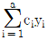
으로 관심을 갖는 처리 균들을 비교하게 된다 이때 이러한 선형결합이 대비를 이루기 위한 조건은?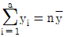
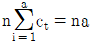
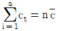
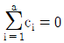
(정답률: 80%)
18. 지분실험법에 관한 설명으로 틀린 것은?
- 지분실험법이 오차항의 자유도는 (총 데이터 수)-(인자의 수준수의 합)에서 유도하여 만든다.
- 요인이 유의할 경우 모평균의 추정은 별로 의미가 없고, 산포의 정도를 추정하는 것이 효과적이다.
- 일반적으로 변량요인들에 대한 실험계획법으로 많이 사용되며 와전 랜덤 실험과는 거리가 멀다.
- 여러 가지 샘플링 및 측적의 정도를 추정하여 샘플링 방식을 설계할 때나 측정방법을 검토할 때에도 사용이 가능하다.
(정답률: 64%)
19. 반복수가 같은 1요인 실험에서 다음의 분산분석표를 얻었다.
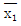
= 12.85 라면, A1 수준에서 모평균 μ(A1)의 95% 신뢰구간은 약 얼마인가? (단, t0.975(4)=2.776, t0.975(15)=2.131, t0.975(19)=2.093이다.)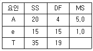
- 12.85±0.58
- 12.85±1.07
- 12.85±2.10
- 12.85±4.20
(정답률: 60%)
20. L16(215) 직교배열표에서 요인 A, B, C, D, F, G,H와 교호작용 A×B, C×D를 배치하는 경우 오차항의 자유도는?
- 4
- 5
- 6
- 7
(정답률: 51%)
2과목: 통계적품질관리
21. 통계적 가설건정 시 사용되는 검정통계량 분포의 유형이 다른 것은?
- 적합도 검정
- 모분산의 검정
- 모분산비의 검정
- 분할표에 의한 검정
(정답률: 55%)
22. 다음의 데이터로 np관리도를 작성할 경우 관리한계는 얼마인가?
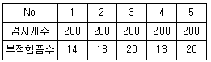
- 15±1.51
- 15±11.51
- 16±8.51
- 16±11.51
(정답률: 53%)
23. 2대의 기계 A, B에서 생산된 제품에서 각각 시료를 뽑아 평균과 표준편차를 구했더니
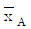
=15,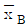
=50, SA=5, SB=5로 평균치의 차이가 크게 나타났다. 변동계수를 이용하여 기계 A, B로부터 생산된 제품의 산포를 비교한 결과로 맞는 것은?- A와 B의 산포가 같다.
- A가 B보다 산포가 작다.
- A가 B보다 산포가 크다.
- 변동계수로는 산포를 비교할 수 없다.
(정답률: 51%)
24. 규격이 12~14cm인 제품을 매일 5개씩 취하여 16일간 조사하여
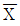
-R관리도를 작성하였더니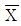
및 R관리도는 안정상태 였으며,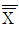
=13cm,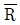
=0.38cm이었다. 이 공정에 관한 해석으로 맞는 것은? (단, n=5일 때 d2=2.326)- 공정능력이 1.5보다 작으므로 6시그마 수준을 위해 더 노력해야 한다.
- 공정능력이 1보다 작으므로 선별로 대응하며 빨리 공정을 개선하여야 한다.
- 공정능력이 약 2정도로 매우 우수하므로 현재의 품질수준을 유지하도록 한다.
- 공정능력이 약 2정도로 매우 우수하나 치우침이 발생하고 있으므로 중앙으로 평균을 조정한다.
(정답률: 60%)
25. 전수검사가 불가능하여 반드시 샘플링검사를 하여야 하는 경우는?
- 전기제품의 출력전압의 측정
- 주물제품의 내경가공에서 내경의 측정
- 전구의 수입검사에서 전구의 전등시험
- 진공관의 수입검사에서 진공관의 평균수면 추정
(정답률: 65%)
26. n=5인 그림참조 관리도에서 UCL=43.4M LCL=16.6이었다. 공정의 분포가 N(30, 102)일 때 그림참조 관리도가 관리상한을 벗어날 확률은 약 얼마인가?
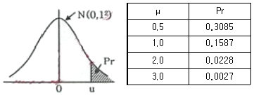
- 0.0014
- 0.0027
- 0.0228
- 0.1587
(정답률: 58%)
27. X, Y는 확률번수이다. X와 Y의 공분산이 8, X의 기대치가 2이고, Y의 기대치가 3일 때 XY의 기대치는?
- 2
- √58
- √70
- 14
(정답률: 46%)
28. 임의의 로트(lot)로부터 400개의 제품을 랜덤 추출하여 조사해 보니 240개가 부적합품이었다. 표본 부적합품률의 분산은?
- 0.0006
- 0.0004
- 0.6
- 0.4
(정답률: 52%)
29. 로트별 합격품질한계(AQL) 지표형 샘플링검사방식(KS Q ISO 2859- : 2014)에서 전환 규칙에 관한 설명으로 틀린 것은?
- 까다로운 검사에서 연속 5로트가 합격되면 보통검사로 복귀된다.
- 연속 5로트 중 2로트가 불합격되면 보통검사에사 까다로운 검사로 전환한다.
- 불합격로트의 누계가 10개가 될 동안 까다로운 검사를 실시하고 있으며 검사를 중지한다.
- 검사중지에서 공급자가 품질을 개선하여 소관권한자가 승인할 때 까다로운 검사로 실시한다.
(정답률: 60%)
30. 모상관계수 ρ≠0인 경우
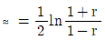
로 ≈변환을 하면 ≈는 근사적으로 어떤 분포를 따르는가?- t분포
- X2분포
- F분포
- 정규분포
(정답률: 56%)
31. 군의 수 k=40, 샘플의 크기 n=4인
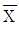
-R 관리도에서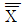
=27.70,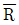
=1.02이다. 군내변동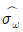
는 약 얼마인가? (단, n=4일 때, d2=2.⑤9, d3=0.88이다.)- 0.495
- 0.693
- 1.159
- 13.453
(정답률: 49%)
32. 어떤 공작기계로 만든 사프트 중에서 랜덤하게 13개를 샘플링하여 외경을 측정하였더니 평균은 112.7, 제곱합은 176이었다. 샤프트 외경의 모평균의 95% 신뢰구간은 약 얼마인가? (단, t0.95(12)=1.782, t0,95(13)=1.771, t0.975(12)=2,179, t0.975(13)=2.160이다.)
- 112.7±1.89
- 112.7±2.31
- 112.7±8.78
- 112.7±8.87
(정답률: 52%)
33. OC 곡선의 특성을 설명한 것으로 틀린 것은?
- n이 커지면 검출력(1-β)이 증가한다.
- σ가 커지면 검출력(1-β)이 증가한다.
- α가 증가하면 검출력(1-β)이 증가한다.
- α와 β가 같이 증가하면 OC 곡선의 기울기는 완만해 진다.
(정답률: 57%)
34. A기계와 B기계의 정도(精度)를 비교하기 위하여 각각의 기계로 15개씩 제품을 가공하였더니 VA=0.⑤2mm2, VB=0.178mm2가 되었다. 유의수준 5%에서 A기계의 산포가 B기계의 산포보다 더 작다고 할 수 있는지를 검정한 결과로 맞는 것은? (단, F0.95(14, 14)=2.48이다.)
- 주어진 데이터로는 판단하기 어렵다.
- 두 기계의 산포는 같다고 할 수 있다.
- A기계의 산포가 더 작다고 할 수 없다.
- A기계의 산포가 더 작다고 할 수 있다.
(정답률: 58%)
35. 모부적합수에 대한 검정을 할 때 검정을 할 때 검정통계량으로 맞는 것은?
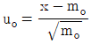
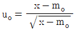
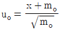
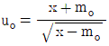
(정답률: 73%)
36. 스킵 로트 샘플링에 대한 설명으로 적합한 것은?
- 1/5이라는 샘플링 빈도를 검사 초기부터 사용할 수 있다.
- 샘플링검사 결과 품질이 악화되면 로트별 샘플링 검사로 복귀한다.
- 제품이 소정의 판정기준을 만족한 경우에 검사빈도는 1/5을 정용할 수 없다.
- 검사에 제출된 제품의 품질이 AOQL보다 상당히 좋다고 입증된 경우에 적용가능하다.
(정답률: 47%)
37. 계량형 샘플링검사에 대한 설명으로 틀린 것은?
- 부적합품이 전혀 없는 로트가 불합격될 가능성이 있다.
- 계량형 품질특성치이므로 계수형 데이터로 바꾸어 적용할 수는 없다.
- 검사대상제품의 품질 특성에 대한 분리 샘플링검사가 필요할 수 있다.
- 품질특성의 통계적 분포가 정규분포에 근사하지 않을 경우, 적용하기 곤란하다.
(정답률: 61%)
38. 부선 5척으로 광석이 입하되고 있다. 부선 5척은 각각 200, 300, 500, 800, 400톤 씩 싣고 있다. 각 부선으로부터 광석을 풀 때 100톤 간격으로 인크리멘트를 떠서 이것을 대량 시료로 혼합할 경우 샘플링의 정밀도는 약 얼마인가? (단, 이 관석은 이제까지의 실험으로부터 100톤 내의 인크리멘트간의 산포(σω)가 0.8인 것을 알고 있다.)
- 0.03
- 0.036
- 0.⑤
- 0.08
(정답률: 34%)
39. 관리도에 대한 설명으로 틀린 것은?
- 공정관리용 관리도는 미리 지정된 기준값이 주어져 잇지 않은 관리도이다.
- 관리하려는 품질특성이 계량형일 때 군내변동의 관리에는 R관리도를 사용한다.
- 군의 합리적인 선택은 기술적 지식 및 제조 조건과 데이터가 취해진 조건에 대한 구분에 의존한다.
- 관리도에서 점이 관리한계를 벗어나면 반드시 원일을 조사하고, 원인을 알면 다시 일어나지 않도록 조치를 한다.
(정답률: 57%)
40. 멘델의 유전법칙에 의하면 4종류의 식물이 9:3:3:1의 비율로 나오게 되어 있다고 한다. 240그루의 식물을 관찰하였더니 각 부문별로 120:55:40:25로 나타났다면, 적합도 검정을 위한 통계량은 약 얼마인가?
- 9.11
- 10.98
- 11.11
- 12.12
(정답률: 43%)
3과목: 생산시스템
41. 목표생산주기시간(사이클 타임)을 구하는 공식으로 맞는 것은? (단,∑tii 는 총 작업소요 시간, Q는 목표생산량, a는 부적합품률, μ는 라인의 여유율이다.)
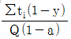
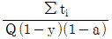
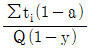
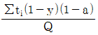
(정답률: 57%)
42. 다음가 같은 제품을 생산하는데 적합한 배치방식은 무엇인가?
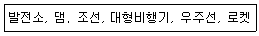
- 공정별 배치
- 제품별 배치
- 위치고정형 배치
- 혼합형 배치
(정답률: 69%)
43. 1일 조업시간을 8시간, 1일 부하시간 460분, 1일 생산량 380개, 정지내용(준비작업 30분,고장 30분 조정 20분), 부적합품 5개이다. 또, 기준싸이클 타임은 0.5분/개, 실제 사이클타임은 0.8분/개이다. 실질가동률은 얼마인가?
- 62.5%
- 72.6%
- 80.0%
- 85.3%
(정답률: 37%)
44. 설비배치의 형태 중 U-Line의 원칙에 해당되지 않은 것은?
- 정지작업의 원칙
- 입식작업의 원칙
- 다공정 담당의 원칙
- 작업량 공평의 원칙
(정답률: 55%)
45. MRP 운영에 관련된 용어의 설명으로 틀린 것은?
- 총소요량(gross requiriments)은 각 기간 중에 예상되는 총수요를 뜻한다.
- 순소요량(net requirements)은 주일정계획에 의하여 발생된 수요를 충족시키기 위해 새로 계획된 주문에 의해 충당할 수량을 의미한다.
- 보유재고량(projected on hand inventory)은 주문량을 인수하고 총수요량을 충족시킨 후 기말에 남는 재고량으로 현재 이용 가능한 기초재고량이다.
- 로트별(lot for lot)주문법을 사용하는 경우, 초기에 보충되어야 할 계획된 량을 의미하는 계획수취량(planned receipts)과 순소요량(net requirement)은 서로 다른 값을 갖는다.
(정답률: 49%)
46. 제품 생산 시 발생되는 데이터를 실시간으로 수집하고 조회하며, 이들 정보를 통하여 생산 통제를 하는 1차 기능과 분석 빛 평가를 통한 생상성향상을 시할 수 있는 시스템은?
- POP(Point of Production)
- POQ(Period Order Quantity)
- BPR(Business Process Reengineering)
- CRP(Distribution Requirements Planning)
(정답률: 44%)
47. 작업공정도(OPC)에 대한 설명으로 틀린 것은?
- 공정계역의 개괄적 파악
- 세부분석을 위한 사전 조사용
- 중요한 정체, 운반시간의 파악
- 단순공정분석에 대한 분석도표
(정답률: 44%)
48. 협력업체에 의한 자재조달품목으로 바라직하지 않은 것은?
- 특허권에 제약이 있는 품목
- 상호구매가 중요시 되는 품목
- 제품 생산에 중요한 중점 품목
- 자체의 기술력에 한계가 있는 품목
(정답률: 46%)
49. 조업도(매출량, 생산량)의 변화에 따라 수익 및 비용이 어떻게 변하는가를 분석하는 기법은?
- 이동평균법
- 손익분기분석
- 선형계획법
- 순현재가치분석
(정답률: 64%)
50. 동작경제의 원칙 중 신체사용에 관한 원칙의 내용으로 틀린 것은?
- 두 손의 동작은 같이 시작하고 같이 끝나도록 한다.
- 손의 동작은 거리가 최소가 될 수 있도록 직선동작으로 한다.
- 두 팔의 동작은 동시에 서로 반대방향으로 대칭적으로 움직이도록 한다.
- 가능하면 쉽고도 자연스러운 리듬이 작업동작에 생기도록 작업을 배치한다.
(정답률: 57%)
51. 구람의 네트워크에서 단계 3의 TE(Earliest Possible Time)와 TL(Latest Allowable Time)은?
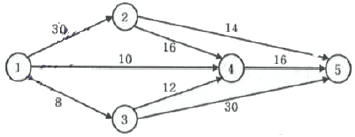
- 0과 32
- 8과 32
- 0과 34
- 8과 34
(정답률: 56%)
52. 가중이동평균법에서 최근 자료에 높은 가중치를 부여하는 가장 큰 이유는?
- 매개변수 파악을 위하여
- 시간적 간격을 좁히기 위하여
- 재고의 정확성을 높이기 위하여
- 수요변화에 신속 대응하기 위하여
(정답률: 59%)
53. JlT 생산시스템의 특징으로 틀린 것은?
- 자재의 흐름은 푸쉬(push)방법이다.
- 간판시스템의 운영으로 재고수준을 감소시킨다.
- 작업의 표준화로 라인의 동기화(同期化)를 달성할 수 있다.
- 준비교체시간을 최소화시켜 유연성의 향상을 추구한다.
(정답률: 66%)
54. 설비보전방법 중 CBM(condition-based maintenance)에 의한 기준열화 이하의 설비를 예방보전하는 방법은?
- 예지보전
- 개량보전
- 수리보전
- 사후보전
(정답률: 54%)
55. 킹 테니스 라켓의 구입단가가 2000원이고, 여기에 필요한 1회 발주비용이 10000원이다. 재고유지비용은 단위당 구입단가의 20%이다. 이 때 경제적 발주횟수는? (단, 연간소요량을 20000대이다.)
- 10회
- 20회
- 30회
- 40회
(정답률: 41%)
56. 다음에서 설명하고 있는 수요예측기법은?
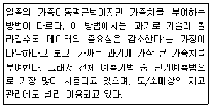
- 지수평활법
- 박스젠킨스 모형
- 역사자료 유추법
- 라이프사이클 유추법
(정답률: 59%)
57. 주기가 짧고 반복전인 작업에 적합한 작업측정기법으로 볼 수 없는 것은?
- WF법
- 스톱워치법
- MTM법
- 워크샘플링법
(정답률: 53%)
58. 고객서비스 수준을 만족시키면서 전반적인 시스템 비용을 최소화하기 위해 제품이 적당한 수량으로 적당한 장소에, 적당한 시간에 생산되고 유통되도록 공급자, 제조업자, 창고업자, 소매업자 들을 효율적으로 통합하는 데 이용되는 일련의 접근 방법을 뜻하는 기법은 무엇인가?
- ERP
- MRP
- SCM
- TPM
(정답률: 62%)
59. 총괄생산계획에서 재고수준 변수와 직접적인 관련성이 가장 높은 비용항복은?
- 퇴집수당
- 교육훈련비
- 설비확장비용
- 납기지연으로 인한 손실비용
(정답률: 68%)
60. 5개의 작업이 2대의 기계(A, B)를 거쳐 단계적으로 완성된다. 존슨법칙(Johnson's rule)을 이용하여 기계사송시간을 최소로 하는 작업순서로 맞는 것은? (단, 각 숫자는 가공시간을 나타낸다.)
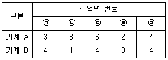
- ㉢→㉣→㉠→㉤→㉡
- ㉣→㉠→㉤→㉢→㉡
- ㉢→㉠→㉤→㉣→㉡
- ㉣→㉤→㉢→㉠→㉡
(정답률: 54%)
4과목: 신뢰성관리
61. 일반적으로 가정용 오디요, TV, 에어컨 등의 시스템, 기기 및 부품 등이 정해진 사용조건에서 의도하는 기간 동안 정해진 기능을 발휘할 확률은?
- 신뢰도
- 고장률
- 불신뢰도
- 전자부품수면관리도
(정답률: 71%)
62. n개의 부품으로 이루어지는 직렬시스템에서 각 부풍의 고장률이 λ1, λ2, ㆍㆍㆍλn 일 때 각 부품의 중요도를 구하는 식으로 맞는 것은?
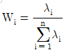
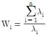
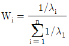
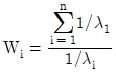
(정답률: 43%)
63. 지수분포를 따르는 수리계 시스템의 고장률은 0.02/시간이고, 이 시스템의 평균수리시간(MTTR)이 30시간 이라면, 이 시스템의 가용도(Availabilty)는?
- 37.5%
- 48.8%
- 62.5%
- 74.2%
(정답률: 63%)
64. 어느 가정의 연말 크리스마스트리가 50개의 전구로 구성되어 있다. 이 트리클 점등 후 연속사용 할 때 1000시간까지 고장 난 개수가 30개라고 할 때, 1000시간까지의 전구의 신뢰도는?
- 0.3
- 0.2
- 0.4
- 0.5
(정답률: 53%)
65. 평균순위법을 이용하여 소시료 시험결과 2번째 랭크에서의 고장률함수 λ(t2)=0.02hr이었다. 이때 실험한 시료수가 5개이고, 3번째 고장난 시료의 고장시간이 20시간 경과 후였다면 2번째 시료가 고장난 시간은?
- 7.5시간
- 10시간
- 12시간
- 15시간
(정답률: 32%)
66. 다음의 고장목그림(FT도)에서 시스템의 고장 확률은? (단, 주어진 수치는 각 구성품의 고장률이며, 각 구성품의 고장은 서로 독립이다.)
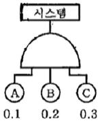
- 0.0⑤
- 0.006
- 0.007
- 0.008
(정답률: 69%)
67. 신뢰도를 배분할 때 고려해야 하는 사항이 아닌 것은?(오류 신고가 접수된 문제입니다. 반드시 정답과 해설을 확인하시기 바랍니다.)
- 신뢰도가 높은 구성품에는 높게 부여한다.
- 중요한 구성품에는 신뢰도를 높게 배정한다.
- 표준 구성품에는 신뢰도를 높게 배정한다.
- 안정성, 경제성을 고려하여 시스템 전체로 보아 균형을 취한다.
(정답률: 39%)
68. 지수분포를 따르는 어떤 부품에 대해 10개를 샘플링하여 모두 고장이 날 때까지 정상수명시험한 결과 평균수면은 100시간으로 추정되었다. 이 제품에 대한 100시간에서의 고장확률 믿도함수는 약 얼마인가?
- 0.0037/시간
- 0.0113/시간
- 0.3678/시간
- 0.6321/시간
(정답률: 31%)
69. 강도는 평균 140kgf/cm2, 표준편차 16kgf/cm2인 정규분포를 따르고 부하는 평균 100kgf/cm2, 표준편차 12kgf/cm2인 정규분포를 따를 경우에 부품의 신뢰도는 얼마인가? (단, u0.8531=1.⑤, u0.9545=1.69, u0.9772=2.00, u0.9913=2.38이다.)
- 0.8534
- 0.9545
- 0.9772
- 0.9912
(정답률: 61%)
70. 3모수 와이블 분포에서 임무시간 t=1000이고, 척도모수(η)가 1000, 위치모수(r)가 0일 때, 신뢰도에 대한 설명으로 맞는 것은?
- 형상모수(m) 값에 무관하게 신뢰도는 일정하다.
- 형상모수(m) 값에 무관하게 신뢰도는 감소한다.
- 형상모수(m)가 증가함에 따라 신뢰도는 증가한다.
- 형상모수(m)가 감소함에 따라 신뢰도는 증가한다,
(정답률: 47%)
71. 보전성이랑 주어진 조건에서 규정된 기간에 보전을 완료할 수 있는 성질이다. 주어진 조건 중 보전성 설계에 관한 설명으로 틀린 것은?
- 수리와 회복이 신속용이 할 것
- 고장, 결함부품 및 재료의 교환이 신속용이 할 것
- 고장이나 결함의 징조를 용이하게 검출할 수 있을 것
- 고장이나 결함이 발생한 부분에 접근성이 용이하지 않을 것
(정답률: 66%)
72. FMEA로 식별한 치면적 품목에 발생확률을 고려하여 치명도 지수를 구한 다음에 고장 등 급을 결정하는 해석을 무엇이라 하는가?
- ETA
- FHA
- FTA
- FMECA
(정답률: 57%)
73. 와이블 분포를 가정하여 신뢰성을 추정하는 경우 특성수면이란?
- 약 37%가 고장 나는 시간이다.
- 약 50%가 고장 나는 시간이다,
- 약 63%가 고장 나는 시간이다.
- 100%가 고장 나는 시간이다.
(정답률: 55%)
74. 시험 중에 연속적으로 총 시험시간 대비 고장발생 개수를 평가하여 합격영역, 불합격영역, 시험계속영역으로 구분하여 시험종료시점이 미리 정해져 있지 않은 시험법은 무엇인가?
- 일정기간시험
- 신뢰성 축차시험
- 신회성 수학시험
- 신회성 보중시험
(정답률: 54%)
75. Y제품의 신뢰도를 추정하기 위하여 수명시험을 하고, 와이블 확률지들 사용하여 형상모수(m)의 값을 추정하였더니 m=1.0이 되었다. 이 제품의 고장률에 대한 설명으로 맞는 것은?
- 고장률은 IFR이다.
- 고장률은 CFR이다.
- 고장률은 DFR이다.
- 고장률은 불규칙이다.
(정답률: 64%)
76. 초기고장 기간동안 모든 고장에 대하여 연속적인 개량보전을 실시하면서 규정된 환경에서 모든 아이템의 기능을 동작시켜 하드웨어의 신뢰성을 형상시키는 과정을 무엇이라 하는가?
- FTA
- 가속수명시험
- FMEA
- 번인(burn-in)
(정답률: 63%)
77. 가속수명시험 데이터를 분석하여 사용조건에서의 수명을 예측하고자 한다. 이때 데이터 분석에 필요한 것으로 가장 타당한 것은?
- 수명분포
- 수명-스트레스 관계식
- 수명분포와 측정 및 분석장비
- 수명분포와 수명-스트레스 관계식
(정답률: 53%)
78. 신회도가 0.8인 동일한 부품을 사용하여 그림과 같이 만들어진 시스템에서 신뢰도는 약 얼마인가?
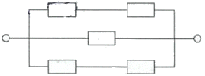
- 0.3277
- 0.7373
- 0.9741
- 0.9997
(정답률: 53%)
79. 어떤 제품이 20시간, 30시간, 40시간의 고장시간을 기록하였고, 또 하나의 70시간 동안 고장이 일어나지 않있다. 그렇다면 이 기기의 평균수명은 약 몇 시간인가?
- 30
- 40
- 53
- 95
(정답률: 37%)
80. 2개의 부품 중 하나만 작동하면 장치가 작동되는 경우, 장치의 신뢰도를 0.96 이상이 되게 하려면 각 부품의 신뢰도를 최소 얼마 이상이 되어야 하는가? (단, 각 부품의 신뢰도는 동일하다.)
- 0.76
- 0.80
- 0.85
- 0.90
(정답률: 55%)
5과목: 품질경영
81. 표준화에 관한 용어의 설명으로 틀린 것은?
- 공차는 부품의 어떤 뿐에 대하여 실제로 측정한 치수이다.
- 시험은 어떤 물체의 특성을 조사하여 데이터를 구하는 것이다.
- 검사란 시험결과를 정해진 기준과 비교하여 로트의 함ㆍ부를 판정하는 것이다.
- 시방은 재료, 제품의 등의 특정한 현상, 성능 시험방법 등에 관한 규정이다.
(정답률: 49%)
82. 품질관리의 4대 기능의 사이틀을 형성하고 있다. 그 순서로 맞는 것은?
- 품질의 설계→공정의 관리→품질의 조사→품질의 보증
- 품질의 설계→공정의 관리→품질의 보증→품질의 조사
- 품질의 조사→품질의 설계→공정의 관리→품질의 보증
- 품질의 조사→품질의 설계→품질의 보증→공정의 관리
(정답률: 40%)
83. 품질관리 교육방법 중에서 일상작업 중에 교육을 실시하여 작업자로 하여금 업무수행에 필요한 지식, 기능 태도 등에 대해서 배우도록 하는 직장 내 훈련방식은?
- IT
- OJT
- CAD
- Off-JT
(정답률: 63%)
84. 종합적 품질경영(TQM)을 추진하기 위한 조직적 구조로서 활용되고 있는 팀(team) 활동으로 틀린 것은?
- 동일한 작업장의 조직원으로 구성된 자발적 문제해결 집단
- 주어진 과업이 일단 완성되면 해체되는 태스크 팀(task team)
- 반복되는 문제를 해결하기 위해 수행되는 프로젝트 팀(project team)
- 일련의 작업이 할당된 단위로서, 구성원들이 융통성 있게 작업을 공유할 수 있도록 하는 팀(team)
(정답률: 45%)
85. 품질보증체계도 작성이 대한 설명으로 틀린 것은?
- 정보의 피드백 및 알맞은 정보의 공유가 가능해야 한다.
- 관련부문의 품질보증상 실시해야 할 일의 내용 및 책임이 명시되어야 한다.
- 각 부문 사이에 일의 빠뜨림이나 실수가 없도록 상호 관계가 명시되어 있어야 한다.
- 품질보증의 전체시스템을 일괄표시하면 아주 복잡하고 길게 작성되기 때문에 기본시스템으로만 표시하여야 한다.
(정답률: 55%)
86. 사내표준화의 주된 효과가 아닌 것은?
- 개인의 기능을 기업의 기술로서 보존하여 진보를 위한 발판의 역할을 한다.
- 업무의 방법을 일정한 상태로 고정하여 움직이지 않게 하는 역할을 한다.
- 품질메뉴얼이 준수되며, 책임과 권한을 명확히 하여 업무처리기능을 확실하게 한다.
- 관리를 위한 기준이 되며, 통계적 방법을 적용할 수 있는 장이 조성되어 과학적 관리수법을 활용할 수 있게 된다.
(정답률: 54%)
87. 전통적으로 제품과 서비스의 차이에 대해 새서(Sasser) 등은 4가지 차원으로 설명해 왔었다. 이 4가지 서비스 차원에 해당하지 않는 것은?
- 무형성(intangibility)
- 분리성(separability)
- 동시성(simultaneity)
- 불균일성(heterogeneity)
(정답률: 32%)
88. 공정능력(Process capability)에 대한 설명으로 맞는 것은? (단, U는 규격상한, L은 규격 하한, σω는 군내변동이다.)
- 공정능력비가 클수록 공정능력이 좋아진다.
- 현실적인 면에서 실현 가능한 능력을 정적공정능력이라 한다.
- 상한규격만 주어진 경우 상한공정능력지수(CpkU)는 (U-L)을 6σω로 나눈 값이다.
- 하한규격만 주어진 경우 하한공정능력지수(CpkU)는 (
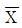
-L)을 3σω로 나눈 값이다.
(정답률: 47%)
89. 국가 규격의 연결이 잘못된 것은?
- NF-독일
- GB-중국
- BS-영국
- ANSI-미국
(정답률: 50%)
90. 모티베이션 운동은 그 추진 내용면에서 볼 때 동기 부여형과 불량 예방형으로 나눌 수 있다. 동기 부여형의 황동에 해당되지 않는 것은?
- 고의적 오류의 억제
- 품질 의식을 높이기 위한 모티베이션 양양교육
- 관리자책임의 불량이라는 관점에서 작업자의 개선행위의 추구
- 우수한 작업자의 기술습득 및 기술개선을 위한 교육훈련을 실시
(정답률: 46%)
91. 다음 그림에 대한 평가로 맞는 것은?
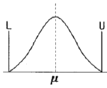
- 공정능력이 충분하므로 관리의 간소화를 추구한다.
- 공정능력은 있으나 공정개선을 위한 노력이 필요하다.
- 공정능력이 부족하므로 현재의 규격을 재검토 하거나 조정하여야 한다.
- 공정능력이 매우 양호하므로 제품의 단위당 가공시간을 단축시키는 생산성 향상을 시도하는 것이 바람직하다.
(정답률: 38%)
92. 같은 직장 또는 같은 부서 내에서 품질 생산 향상을 위해 계층 간 또는 계층별 소집단을 형성하고 자주적ㆍ지속적으로 작업 또는 업무개선을 하는 전사적 품질기술 혁신 조직은?
- 6시그마 활동
- 개선제안 활동
- 품질분임조 활동
- VE(Value Engineering)
(정답률: 61%)
93. 품질경영시스템-기본사항 및 용어(KS Q ISO 9000:2015)에서 일반적인 제품 범주를 분류하는 기준에 해당되지 않는 것은?
- 서비스(Service)
- 하드웨어(Hadware)
- 소프트웨어(Software)
- 원재료(Paw material)
(정답률: 44%)
94. 제조물책임에서 제조상의 결함에 해당하지 않는 것은?
- 안전시스템의 고장
- 제조의 품질관리 불충분
- 안전시스템의 마비, 부족
- 고유기술 부족 및 미숙에 의한 잠재적 부적합
(정답률: 30%)
95. 측정기의 일상점검에 대한 설명으로 틀린 것은?
- 작업 후에는 반드시 측정기에 대한 영점조정을 실시해야 한다.
- 측정자는 작업 전에 측정기 각 부위의 작동상태를 점검하여야 한다.
- 버니어 캘리퍼스는 측정자의 흔들림, 깊이 바의 휨이나 깨짐 등을 살핀다.
- 하이트 게이지의 경우에는 스크라이버의 손상 여부, 측정자의 흔들림 상태를 확인한다.
(정답률: 51%)
96. 검사준비시간이 10분, 검사작업시간이 50분 소요되며, 직접 임금 및 부품비의 합계가 8000원/시간일 때 평가비용에 해당하는 수입검사비용은 얼마인가?
- 2000원
- 4500원
- 6000원
- 8000원
(정답률: 52%)
97. 커크패트럭(Kirkpatrick)이 제안한 품질비용 모형에서 예방코스트의 증가에 따른 평가코스트와 실패코스트의 변화를 설명한 내용으로 가장 적절한 것은?
- 평가코스트 감소, 실패코스트 감소
- 평가코스트 증가, 실패코스트 증가
- 평가코스트 감소, 실패코스트 증가
- 평가코스트 증가, 실패코스트 감소
(정답률: 41%)
98. 금속가공품의제조공장에서 부적합품을 조사하여보니 다음과 같은 결과를 얻었다. 손실금액의 파레토 그림을 그릴 때 표면 부적합의 누적백분률은 약 몇 %인가?
- 42.2
- 52.2
- 75.7
- 85.7
(정답률: 29%)
99. 다음의 내용이 설명하는 것은?
- Benchmarking
- TQC(total quality control)
- SPC(statistics process control)
- SQM(strategic quality management)
(정답률: 43%)
100. 연구개발, 산업생산, 시험검사 현장 등에서 측정한 결과가 명시된 불확정 정도의 범위내에서 국가측정표준 또는 국제측정표준과 일치되도록 연속적으로 비교하고 교정하는 체계를 의미하는 용어는?
- 소급성
- 교정
- 공차
- 계량
(정답률: 30%)
νe = N - ab
여기서 N은 전체 데이터 수, a는 요인 A의 수준 수, b는 요인 B의 수준 수이다.
따라서 이 문제에서는 N = 15 (4 x 4 - 1), a = 4, b = 4 이므로,
νe = 15 - 4 x 4 = 15 - 16 = -1
하지만 오차항의 자유도는 음수가 될 수 없으므로, 결측치를 제외한 데이터 수가 1 감소한 것으로 보아,
νe = N - ab + 1 = 15 - 4 x 4 + 1 = 8
따라서 정답은 "8"이다.